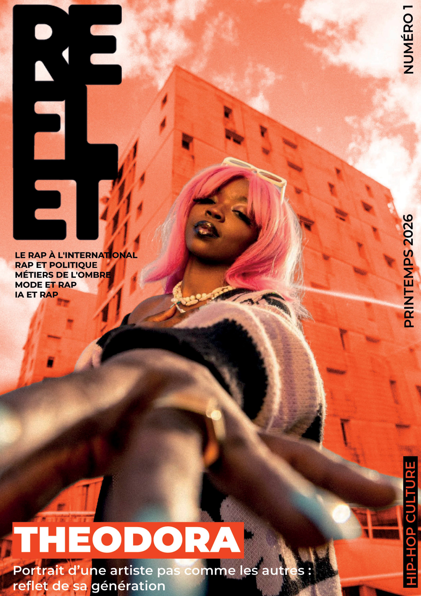
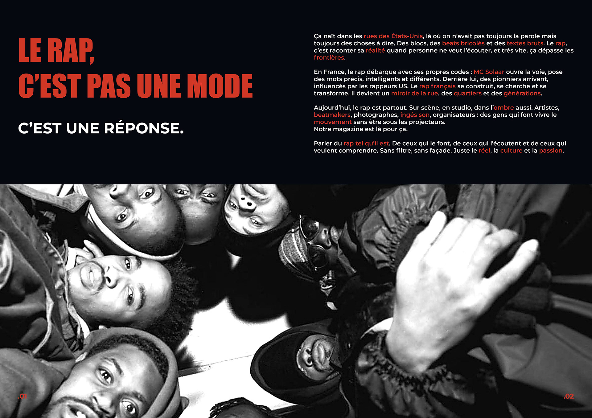
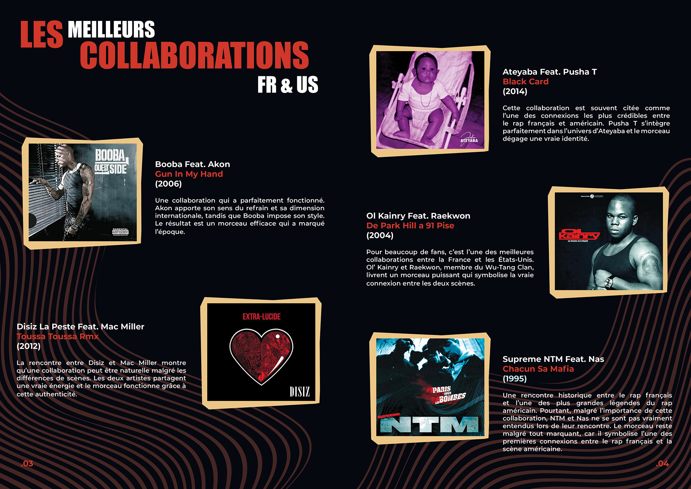
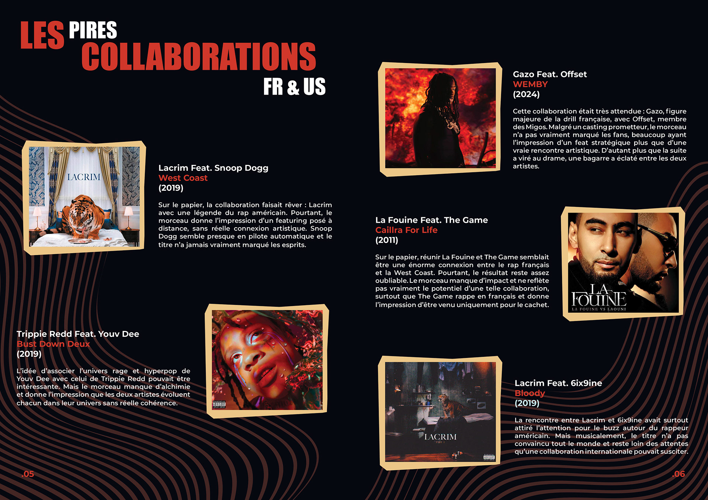
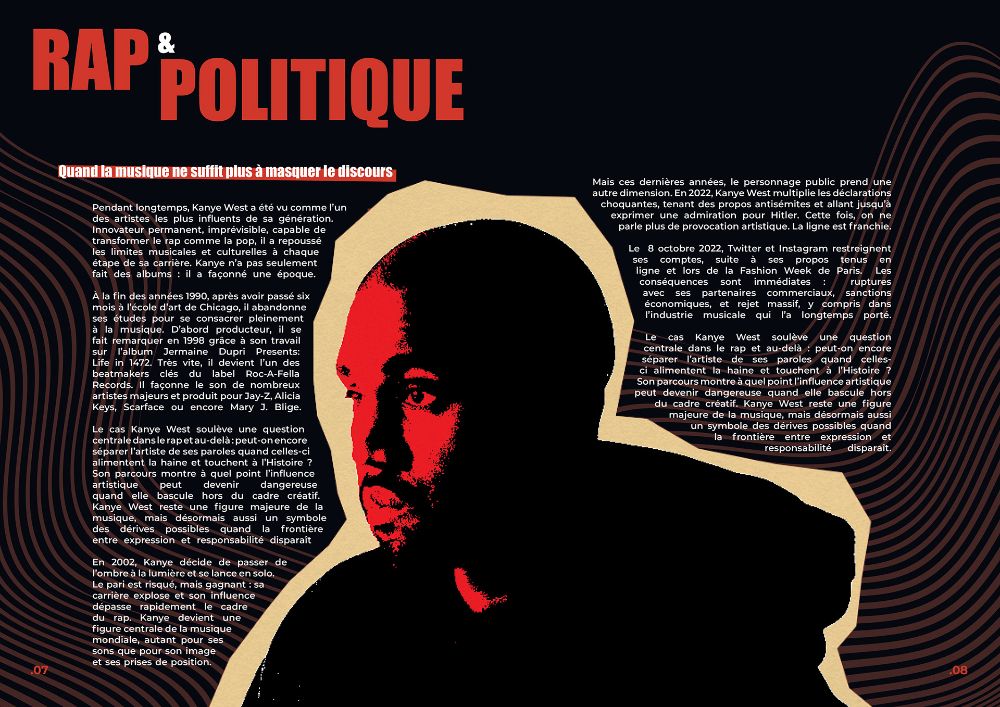
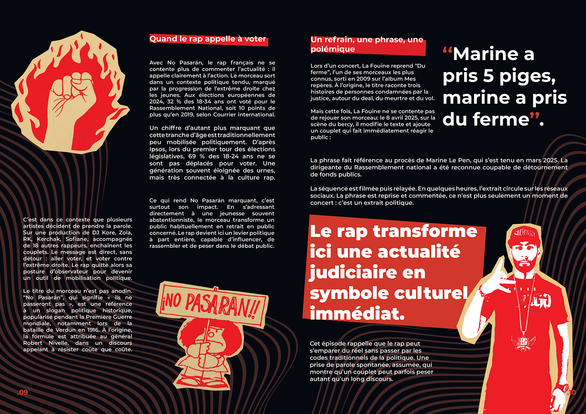
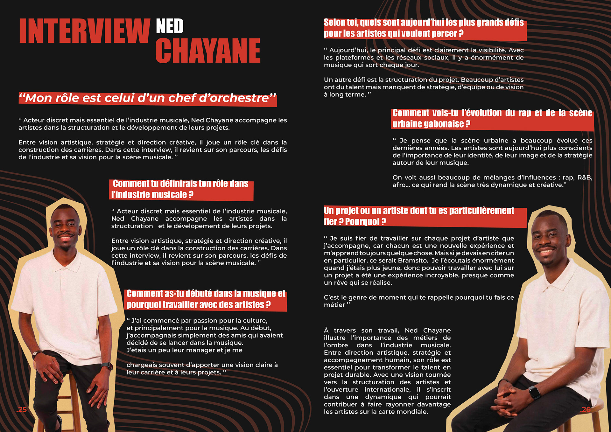
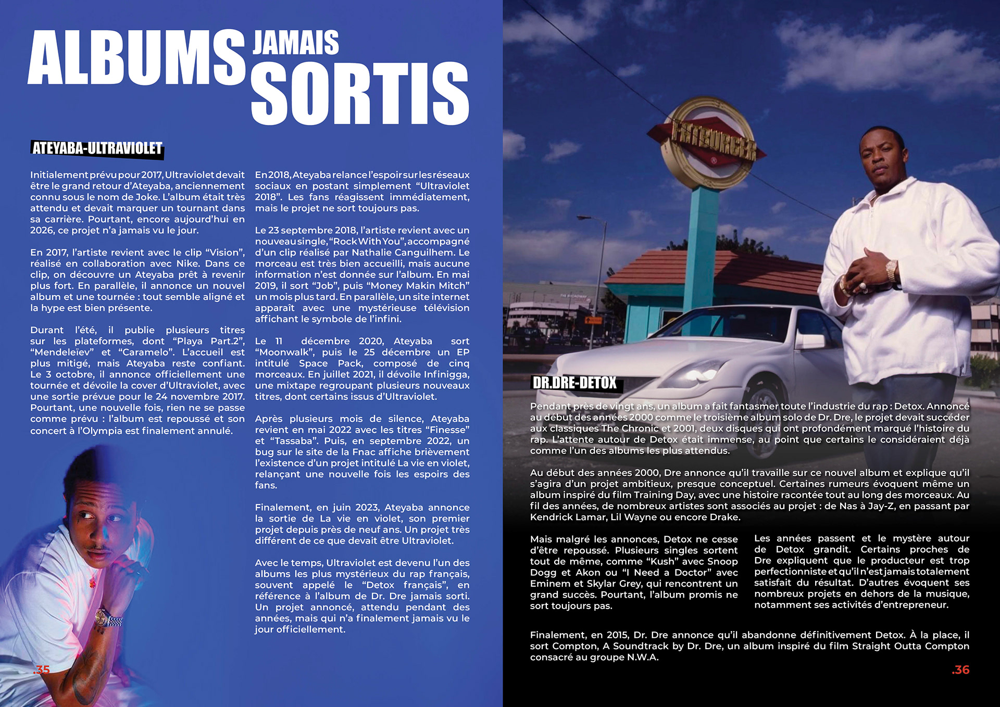
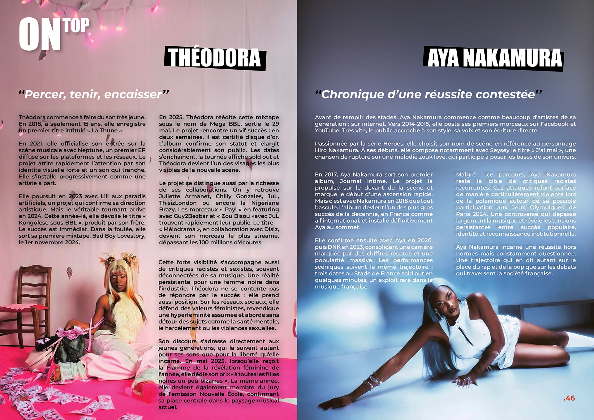
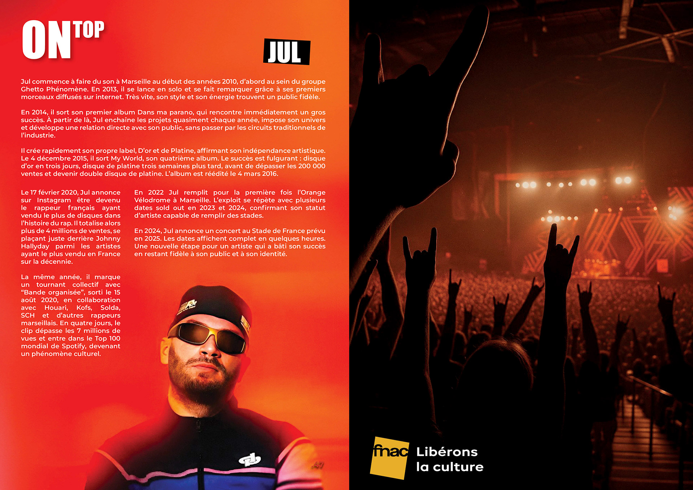

Reflet, Magazine
Un magazine rap qui met en lumière les acteurs de l'ombre de l'industrie musicale : producteurs, ingénieurs du son, directeurs artistiques, réalisateurs de clips… Reflet donne la parole à ceux qu'on ne voit jamais.










Lectorat
Proche. Direct. Sincère.
Reflet s'adresse aux passionnés de rap, aux jeunes créatifs et à toutes celles et ceux qui veulent comprendre les coulisses : comment se fabrique un morceau, comment se monte une carrière, qui crée l'image d'un rappeur.
Le ton est familier, authentique, on parle avec eux, pas au-dessus d'eux. Le visuel prime : une cover forte, un format « collector », des pages dynamiques qui donnent envie dès le premier regard.